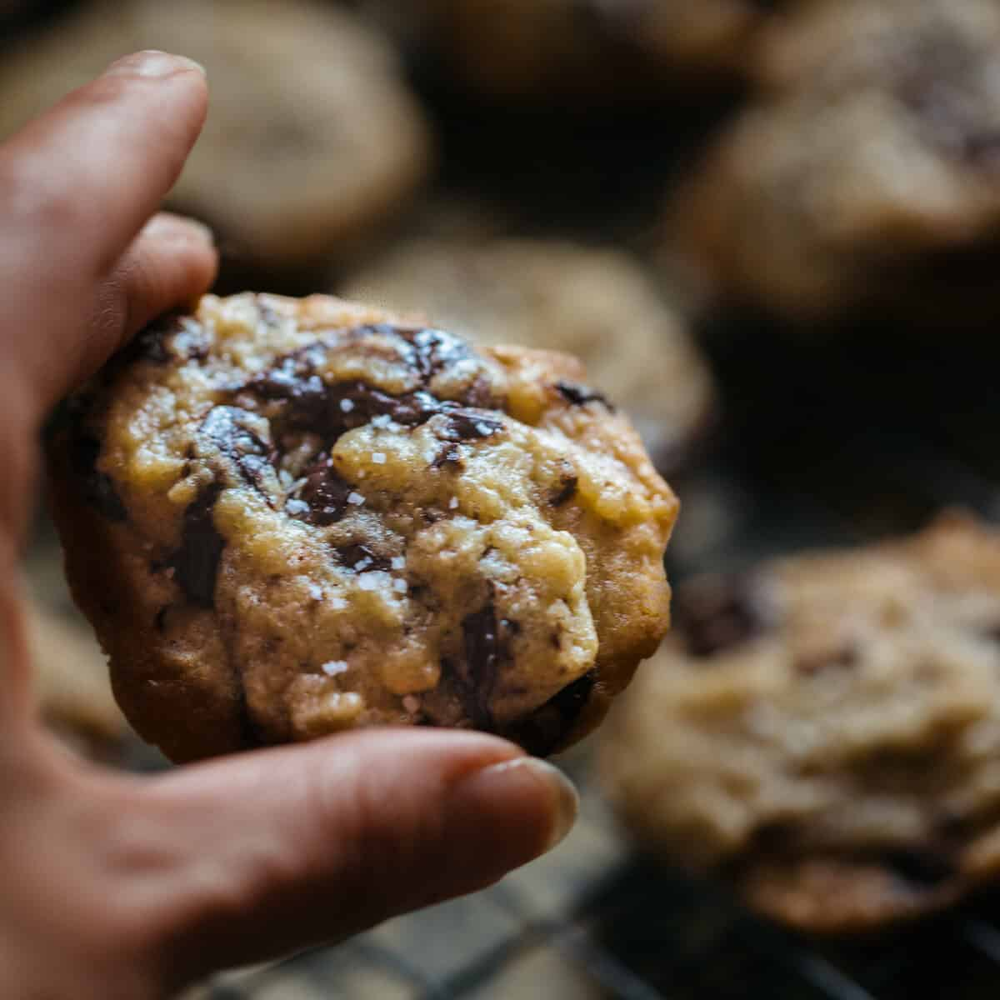

Almond Butter Choc Chip Cookies

Description
A chewy, decadent vegan choc chip cookie that will bamboozle even the most staunch anti vegan.
Ingredients
- 225 g vegan butter
- ice cube
- 280 g all purpose flour
- 3/4 tsp baking soda
- 2 tsp salt
- 140 g white sugar (preferably organic)
- 6 tbsp aquafaba (chickpea brine)
- 1 tbsp soy milk (or any non-dairy milk with protein)
- 1 1/2 tbsp vanilla extract
- 140 g brown sugar
- 2 tbsp almond butter
- 225 g (2 bars) dark chocolate (chopped)
Steps
- Melt butter in a small sauce pot until it begins to turn blond. The butter will start to foam, so stir with whisk to check on color.
- Pour melted butter into small bowl and add ice cube. Stir until ice cube has melted. Place butter in freezer for approximately 20 minutes.
- While butter is cooling, mix together your flour, salt, and baking soda in a medium sized bowl.
- In a standmixer, using the whisk attachment, beat aquafaba and white sugar for several minutes (15-20) until it reaches soft peak stage. Add soy milk (at room temperature) and vanilla extract while still beating. This will slacken your soft peaks to a thick cream.
- Switch out the whisk attachment for the paddle attachment and add brown sugar, almond butter, and cooled butter. On slow setting, incorporate into aquafaba mixture. Slowly add flour mixture, bit by bit until dough forms.
- Add chopped chocolate and incorporate with spatula. Feel free to lick all kitchen utensils‐it's egg/dairy free, so you won't get salmonella. Place cookie dough in air-tight container in the fridge for at least 24 hours and up to 3 days (any longer, and place in freezer).
- When baking, scoop out even portions using an ice cream scooper or, for smaller cookies, a melon baller. For the extra rustic look, tear the cookie dough ball in half, flip them, and smash back together, before placing on your baking sheet.
- Bake cookies at 325° F for approximately 11-15 minutes. Take them out while they are still soft (and seemingly undercooked) in the middle. While they are still hot, sprinkle with course sea salt and then place them on a cooling rack to cool for as long as you can possibly wait (but not more than 5 minutes, and if you can honestly wait longer than that, then why the hell are you making cookies anyway?).
Return to Home